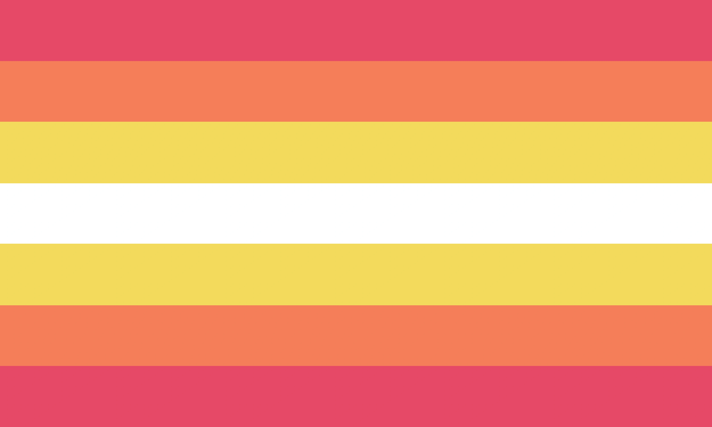

宇志江王国
宇志江町
朝愛
朝 愛（あさ あい）
First Lieutenant Asa Ai
種族：化け猫
階級：２等陸尉
宇志江衛兵のメンバーである。二等陸尉である。
ハイディ・ブラザーウィック
ハイディ・ブラザーウィック
Heidi Blatherwick
種族：魔法使い
ライラックの母である。
出産の準備をしている最中に昏睡状態に陥ったハイディは、現在（宇志江に）居世神之命王立病院の病床にいる。
恵田満菜魏沙
恵田満 菜魏沙（えだみつ なぎさ）
Edamitsu Nagisa
種族：火車
※代名詞は「あたし」である。
藤森しげまつ
藤森 しげまつ（ふじもり しげまつ）
Major Fujimori Shigematsu
種族：人間
階級：３等陸佐
宇志江の騎士である。三等陸佐である。
藤山葉菜子
藤山 葉菜子（ふじやま はなこ）
Fujiyama Hanako
種族：狐
羽木原ユミサ
羽木原 ユミサ（はぎわら ユミサ）
Hagiwara Yumisa
種族：天狗
秦野結
秦野 結（はたの ゆい）
Hatano Yui
種族：チョウチョの妖怪
平井タルスィ
平井 タルスィ（ひらい タルスィ）
Hirai Tarsee
種族：化け狸と犬神のハーフ
平本忘太
平本 忘太（ひらもと わすた）
Captain Hiramoto Wasuta
種族：オオカミの妖怪
階級：１等陸尉
宇志江衛兵のメンバーである。一等陸尉である。
堀小理女
堀 小理女（ほり おりめ）
Hori Orime
ウープタリ語の名：Orimeŷı Ħoriÿw
種族：芝兎
干寺幽美故
魔界の美しいケット・シー
愛称：干寺 幽美故（ほしでら ゆみこ） Hoshidera Yumiko
本名：シーリェス・フォーレシュ Síleas Fólais
種族：魔界の猫
能力：非常に強力な魔法を使う程度の能力
沖美の使い魔とリアサ・フォーレシュの妹である。
スピリットアタック全９種
――スピリットカード――
猫火「燃える火の地獄」
猫水「アイロニックウォーター」
猫木「ウッドアイドル」
猫金「幸運な猫」
猫土「汚れるのはそのような雑用だよ」
猫日「暖かい夏の日」
猫月「猫が夜を徘徊する」
「キャットシーフ！」
「ウォチフル・キャット」
※代名詞は「私」だとたまたまに「おいら」である。
蓬莱寺燐音
罰当たり蓬莱の鬼人形
蓬莱寺 燐音（ほうらいじ りんね）
Houraiji Rinne
種族：現時点では不明（おそらく、鬼であるね～）
宇志江の学校に通う遠く離れた土地の少女である。三年生である。
皇甫救兔
華人実習生
皇甫 救兔（ホワンフ・ジウトゥ）
Huangfu Jiutu
種族：山兎
北方大陸から山兎である。
※代名詞は「」である。ピンインに「Huángfǔ Jiùtù」で書く。ウェード式に「Huang2-fu3 Chiu4-tʻu4」で書く。国語ローマ字に「Hwangfuu Jiowtuh」で書く。繁体字に「皇甫救兔」を書く。簡体字に「皇甫救兔」で書く。
伊豐芥之介
伊豐 芥之介（いで あくたのすけ）
Ide Akutanosuke
種族：お酒の妖怪
能力：血液をお酒に変える程度の能力
ちゆりの父親である。
伊豐ちゆり
🏳️🌈 プライド 🏳️🌈
代名詞：she/it
伊豐 ちゆり（いで ちゆり）
Ide Chiyuri
種族：お酒の妖怪
能力：血液をお酒に変える程度の能力
芥之介の娘である。
イマカサ聡一郎
イマカサ 聡一郎（イマカサ そういちろう）
Second Lieutenant Imakasa Souichirou
種族：狐
階級：３等陸尉
宇志江衛兵のメンバーである。三等陸尉である。
犬上藤
犬上 藤（いぬがみ ふぢ）
Inugami Fudji
種族：犬妖怪
茂和の妻であり、あっ子と波知之と雲雀代とかをるの母親である。
犬上波知之
犬上 波知之（いぬがみ はちゆき）
Inugami Hachiyuki
種族：犬妖怪
茂和と藤の息子であり、あっ子の弟であり、雲雀代とかをるの兄である。
犬上雲雀代
犬上 雲雀代（いぬがみ ひばりよ）
Inugami Hibariyo
種族：犬妖怪
茂和と藤の娘であり、あっ子と波知之の妹であり、かをるの姉である。
犬上かをる
🏳️🌈 プライド 🏳️🌈
代名詞：di/dem/dier

犬上 かをる（いぬがみ かをる）
Inugami Kaoru
種族：犬妖怪
性別：インターセックス（トリプルＸ症候群、ミュラー管無発生）
性自認：ノンバイナリー・ガール
代名詞：奴／奴／奴（di/dem/dier）
誕生日：０３３６年４月１２日
年齢：９歳
茂和と藤の子であり、あっ子と波知之と雲雀代の最年少の同生である。
犬上氏より幼い犬妖怪である。髪と目が緑から紫まで暈しである事で認識できる。兄弟姉妹の末っ子である。
ノンバイナリーとインターセックスである事から、母親と長姉を除く家族から虐待される事が多く。かをる、かなり孤独を感じる事が多い。また、奴が生まれて間もなく、性別を女性に”直した”。（実は、非道徳的な男性器切除と言う意味である）
かをるは、よく長姉のあっ子と姪・いとこの沖美に打ち明ける。勿論、あっ子と沖美の両方が奴を人として（そうあるべきように）、間違い（かをるは間違いではないよ）としてではなく。
でも、沖美が第二性染色体を欠いている（ターナー症候群）のと同じように、かをるは余分なＸ性染色体を持っている（トリプルＸ症候群）。奴（デル）の健康に多くの問題を引き起こした。
かをるは、非言語的で無口である為、コミュニケーションに問題がある。しかし、奴と沖美には複雑なジェスチャーのシステムがあり、その問題を回避する為に両者とも使用している。その一つは、かをるが学業などの何でも助けを必要とするたびに尻尾を上下に振っている事である。藤は現在、かをるが家庭で受けている虐待にもかかわらず、自閉症スペクトラム障害のテストを受けようとしている。
時々犬の真似をして、犬のように吠える。
※書いた代名詞は「あたい」である。
犬上茂和
犬上 茂和（いぬがみ しげかず）
Inugami Shigekazu
種族：犬妖怪
藤の夫であり、あっ子と波知之と雲雀代とかをるの父親である。
出水龍也
出水 龍也（いずみ たつや）
Sergeant Izumi Tatsuya
種族：人間
階級：３等陸曹
宇志江衛兵のメンバーである。三等陸曹である。
金田しの
金田 しの（かねだ しの）
Kaneda Shino
片桐正美子
妖獣を愛して居る可愛い少女
片桐 正美子（かたぎり まみこ）
Katagiri Mamiko
種族：人間
靈尋とコウコのお友達である。妖獣使いである。
スピリットアタック全３種
――スピリットカード――
使い魔「オオカミ」
使い魔「ネコ」
妖術「満月の下の妖獣」
※代名詞は「私」である。
傍島恵二狸
傍島 恵二狸（かたしま えじり）
Katashima Ejiri
種族：天狗
菊乃井蝶々花夢
超越論的な過去で有った教師
菊乃井 蝶々花夢（きのい ちょうちょうはなむ）
Kinoi Chochohanamu
種族：チョウチョウの妖怪（見た目）、亡霊（真実）
能力：彼岸に生き物を飄々する程度の能力
宇志江学校の歴史教師である。
杵島也紀
🏳️🌈 プライド 🏳️🌈
代名詞：ey/em/eir
王国の煩わしい不良少女
杵島 也紀（きしま やき）
Kishima Yaki
種族：化け狸
裕郎の娘である。
スピリットアタック全１種
――スピリットカード――
窃盗「侵入と強盗事件」
※代名詞は「ワタシ」である。
杵島裕郎
杵島 裕郎（きしま ゆうろう）
Kishima Yuurou
種族：化け狸
也紀の父親である。
北河英志
北河 英志（きたがわ えいし）
Colonel Kitagawa Eishi
種族：人間
階級：１等陸佐
宇志江の通関業者である。一等陸佐である。
釘宮魅子
釘宮 魅子（くぎみや みいこ）
Kugimiya Miiko
種族：化け狸
倉田文
倉田 文（くらた あや）
Kurata Aya
種族：犬の妖怪と魔物のハーフ
能力：闇と光を創造する程度の能力
楠本多々介
楠本 多々介（くすもと ただすけ）
Colonel Kusumoto Tadasuke
種族：人間
階級：１等陸佐
宇志江の通関業者である。一等陸佐である。
松原熏
松原 熏（まつばら いぶ）
Matsubara Eve
美姫礫
美姫 礫（みき こいし）
Miki Koishi
宮原正志
宮原 正志（みやはら まさし）
Sergeant First Class Miyahara Masashi
種族：人間
階級：２等陸曹
宇志江の騎士である。二等陸曹である。
本沢乙女
万太陽のメイド
本沢 乙女（もとざわ おとめ）
Motozawa Otome
種族：化け猫
能力：焼け付く苦痛の万短刀を投げる程度の能力
武器：短刀”火日剣”
あっ子と沖美の猫メイドである。ベッドカバーを変えし、ベッドルームを清潔にし、洗濯物を洗いし、皿を洗う。また、沖美と楓の魔法の訓練を監督する。
スピリットアタック全１種
――スピリットカード――
猫符「焼け付く苦痛の一万短刀」
※代名詞は「私」である。
永田いく
永田 いく（ながた いく）
Nagata Iku
中谷萌々子
中谷 萌々子（なかだに ももこ）
Nakadani Momoko
種族：化け猫
西霧儀子
西霧 儀子（にしきり のりこ）
Nishikiri Noriko
ウープタリ語の名：Norikoÿæ Ñiśiķiriÿľģ
種族：芝兎
※代名詞は「わたし」である。
大佐田明
大佐田 明（おおさだ あきら）
General Ohsada Akira
階級：陸上幕僚長
宇志江衛兵のメンバーである。陸上幕僚長である。
大崎静香
大崎 静香（おおさき しずか）
Osaki Shizuka
大沢圭介
大沢 圭介（おおざわ けいすけ）
Ozawa Keisuke
種族：魔法使い
宇志江の町長である。
緑田瑠珠
緑田 瑠珠（ろくだ るみ）
Rokuda Lumi
西園寺キット
西園寺 キット（さいおんじ キット）
Saionji Kit
阪田源之
阪田 源之（さかだ もとゆき）
Sergeant Major Sakada Motoyuki
階級：陸曹長
宇志江衛兵のメンバーである。陸曹長である。
坂河リサコ
坂河 リサコ（さかがわ リサコ）
Sakagawa Risako
※代名詞は「あたい」である。
榊原富魅雄
榊原 富魅雄（さかきばら ふみお）
Sakakibara Fumio
櫻雨思乃
雨降り園児ちゃん
櫻雨 思乃（さくらさめ しの）
Sakurasame Shino
種族：雨の妖怪
桜崎ふみゑ
桜崎 ふみゑ（さくらざき ふみゑ）
Lieutenant General Sakurazaki Fumie
階級：陸将
宇志江衛兵のメンバーである。陸将である。
鮫島一美
鮫島 一美（さめじま かずみ）
Samejima Kazumi
種族：天人（かつて人間）
佐々城美奈
佐々城 美奈（ささき みな）
Sasaki Mina
種族：山兎
瀬里沢さくら
瀬里沢 さくら（せりざわ さくら）
Warrant Officer Serizawa Sakura
階級：准陸尉
宇志江衛兵のメンバーである。准陸尉である。
渋藤里沙
渋藤 里沙（しぶとう りさ）
Shibutou Risa
島村秀雄
日当たりのいい大臣
島村 秀雄（しまむら ひでお）
Shimamura Hideo
種族：人間
宇志江の若い防衛相である。黒曜石評議会によってプロットされていることを、祐二とあっ子に伝える。また、楓と沖美の学術訓練を担当している。
※代名詞は「僕」である。
笹川あっ子
迷い太陽の女王
王名：笹川 あっ子（しのがわ あっこ） Shinogawa Akko
旧姓：犬上 あっ子（いぬがみ あっこ） Inugami Akko
種族：魔法使い（真実で犬妖怪である）
犬上あっ子が生まれる。宇志江の女王と沖美の母親である。
結婚と戴冠前は、非常に熟練した魔導士であった。知っている全ての魔法を沖美に教えている。
※代名詞は「ワタクシ」である。
笹川伊狸沙
神々に好まれる乙女
笹川 伊狸沙（しのがわのいりさ）
Shinogawa no Irisa
種族：魔法使い
能力：神々の力を呼び起こす程度の能力
沖美のお婆さんと祐二のお母さんである。
伊狸沙は沖美に使い魔について知るべき事を全て教えた。
伊狸沙は反逆罪でウインドスイーパー王国に対して宇志江王国の部隊を指揮した事を記念して、ほぼ六十五年間住んでいた。しばしば沖美と楓のお話にその戦争について語る。
※代名詞は「我」である。
笹川居世神之命
素敵な優しさの月の女神
短い名：居世神之命（いせがみのみこと） Isegami-no-Mikoto
全名：笹川居世神之命（しのがわのいせがみのみこと） Shinogawa-no-Isegami-no-Mikoto
榊原秋の孫娘である。沖美の身長にもかかわらず、たった七歳である。
※代名詞は「麿」である。
笹川翠偽尊
偽名：笹川翠偽尊（しのがわのみどりのにせみこと） Shinogawa-no-Midori-no-Nise-Mikoto
原名：ミドリ Midori
種族：人工的な神
笹川沖美
夢の太陽の姫
王名：笹川 沖美（しのがわ おきみ） Shinogawa Okimi
原名：オキミ Okimi
種族：人工的な鬼
能力：甘い夢を呼び起こす程度の能力、悪夢を払拭する程度の能力
武器：刀”甘夢愛剣”、脇差”悪夢恨剣”
性自認：女
代名詞：彼女／奴（she/ve）
雌雄性：レズビアン
祐二とあっ子の十二歳の娘で、宇志江の姫である。
父親が求める多くのことで苦労しているが、彼についてはとても気にしている。
沖美は、実は祐二と、あっ子と、伊狸沙と血の関係はない。むしろ、あっ子が沖美に家がない事を知った後、祐二は彼女を養子にした。沖美は実際には『光藤』というお名前の未知の科学者によって作成された実験的な人造の鬼である。お名前はもともと片仮名で『オキミ』と書かれていた。
彼女は決してそれを認めないが、沖美は他の女の子が好きである。結局のところ、朝次郎のせいで、女性を愛する男性の考えは絶対に沖美を嫌悪する。
本を読むと、お友達と、家族と、牛肉を好む。
――この先、身元。
宇志江王国とウインドスイーパー王国の結界での小さな町。
若い男の地下室の奥深くには、生壷の前に男の子が座っていた。
「すぐに、最大の創造物が実を結ぶでしょう。そして、本当に正常性を１８０度反転できる」
生壷では、小さな女の子が静かに眠っている。
「オキミが生まれるとすぐに、僕は素晴らしい父を逃れた理論への答えを持っている」
そのような断固たる願いで、この男はすぐに最大の創造物を持っているでしょう。
――それから一週間が過ぎた。
スピリットアタック全４種
――スピリットカード――
甘符「ドリームスラッシュ」
悪夢「阿鼻の意味」
宇志江「笹川氏の永目」
鬼符「フルムーンオニ -Kishin-」
※代名詞は「あたし」である。
笹川治虫偽尊
偽名：笹川治虫偽尊（しのがわのおさむのにせみこと） Shinogawa-no-Osamu-no-Nise-Mikoto
原名：オサム Osamu
種族：人工的な神
笹川祐二
覚醒の太陽の王
笹川 祐二（しのがわ ゆうじ）
Shinogawa Yuuji
種族：人間
宇志江の王と沖美の父である。
厳格だが合理的な力で彼の王国を支配する。勉強の全ての分野で優れている事を要求して、娘とかなり厳しいである。
※代名詞は「僕」である。
白樹權二郎
白樹 權二郎（しらき けんじろう）
Shiraki Kenjirou
士田原コウコ
満月の幼いオオカミ少女
士田原 コウコ（したはら コウコ）
Shitahara Kouko
種族：ウェアウルフ
正美子と靈尋のお友達である。
スピリットアタック全３種
――スピリットカード――
狼女「呪い月」
狼女「盛りのついた月」
狼符「十五夜」
※代名詞は「あたし」である。
卒麗田讓魔
世界が拒絶したと軽蔑した少女
卒麗田 讓魔（そつれいた じょうま）
Sotsureita Johma
種族：魔法使い
燐音のお友達である。
杉田麻由美
杉田 麻由美（すぎた まゆみ）
Private Sugita Mayumi
階級：２等陸士
宇志江衛兵のメンバーである。二等陸士である。
田香羅皐戎傘
王家の優しい座敷童
田香羅 皐戎傘（たから こうじゅうがさ）
Takara Koujuugasa
種族：座敷童
由佳理の姉である。
皐戎傘は由佳理より３歳年上である。母親の田香羅さつきが出産で亡くなった為、そんな若い年齢で由佳理の世話をしなければならない。皐戎傘と由佳理は現在、笹川の王家によって保護されている。
※代名詞は「あたくし」です。
田香羅さつき
剣が踊ってる使用人
田香羅 さつき（たから さつき）
Takara Satsuki
種族：座敷童（かつて人間）
皐戎傘と由佳理の死んだ母親である。出産中で死んだ。
田香羅由佳理
藤蔓に包まれた騎士
田香羅 由佳理（たから ゆかり）
Leading Private Takara Yukari
種族：座敷童
能力：鉄の道具と武器を錆びる程度の能力
武器：刀”藤切丸”
階級：陸士長
皐戎傘の妹と宇志江の騎士である。陸士長と強い騎士だよ。
由佳理の母親は出産中に亡くなり、祐二によってお姉さんと一緒に育てられた。愛情を込めて彼を『ゆー君』と呼んだ。
スピリットアタック全１種
――スピリットカード――
藤蔓「藤切丸」
※代名詞は「アタクシ」である。
ツボイケりり娘
ツボイケ りり娘（ツボイケ りりこ）
Tsuboike Liliko
月藤理惠
月藤 理惠（つきとう りえ）
Tsukitou Rie
梅林楓
美徳の巫女
梅林 楓（うめばやし かえで）
Umebayashi Kaede
種族：人間
能力：美徳なしで浄化する程度の能力
武器：野太刀”徳楼剣”
城内で祐二によって育った孤児である。
同じ年齢であるにもかかわらず、沖美を姉として見ている。楓と沖美はしばしば乙女を伴って城の庭で遊ぶ。
スピリットアタック全４種
――スピリットカード――
美徳「玉砕主義」
悪徳「他殺自殺」
敬意「布施教化」
汚名「不法な行ない」
※代名詞は公式で「私」だと軽快で「ボク」である。
若泉容伸
若泉 容伸（わかいずみ やすのぶ）
Second Lieutenant Wakaizumi Yasunobu
種族：人間
階級：３等陸尉
宇志江の騎士である。三等陸尉である。
夜神幽乃
夜神 幽乃（やがみ ゆうの）
Yagami Yuuno
種族：化け猫
※代名詞は「ボク」である。
夜雲率子
夜雲 率子（やくも りつこ）
Yakumo Ritsuko
豪猪依智恵
豪猪 依智恵（やまあらし よりちえ）
Yamaarashi Yorichie
張靈尋
零記憶を持つ月の巫女
張 靈尋（ジャン・リンシン）
Zhang Lingxin
種族：ウェアキャット
村長が見つけた町の若い女の子である。
宇志江にいつ、どのように到着したかを記憶していない。現在病院の部屋で日々を過ごしている。
靈尋はすぐに正美子とコウコと友達になった。正美子達は両方とも満月の靈尋のそばにいて、彼女を安全に保ち、無実の人々を傷つけないようにしている。これは、妖獣使いである片桐家（恐ろしい怪物を飼いならし、平和な市民になるように調整する人々）によって補強されている。正美子は、満月がコウコと同じように靈尋の体に同じ犠牲を払う事を心配している。満月の恐ろしい獣になったにもかかわらず、靈尋は実際に満月を恐れていない。
スピリットアタック全１種
――スピリットカード――
妖猫「月の引っかき傷」
※代名詞は「ボク」だとたまたまに「我」である。ピンインに「Zhāng Língxín」で書く。ウェード式に「Chang1 Ling2-hsin2」で書く。国語ローマ字に「Jang Lingshyn」で書く。繁体字に「張靈尋」を書く。簡体字に「张灵寻」で書く。
中士里市
黒川タリィ
黒川 タリィ（くろかわ タリィ）
Kurokawa Taree
水谷梓
水谷 梓（みずたに あずさ）
Mizutani Azusa
仲冨ユーマ
仲冨 ユーマ（なかとみ ユーマ）
Nakatomi Yuuma
大上小猫
大上 小猫（おおがみ こねこ）
Ogami Koneko
岡崎吉三郎
岡崎 吉三郎（おかざき きちさぶろう）
Okazaki Kichisaburou
高橋哲行
高橋 哲行（たかはし てつゆき）
Takahashi Tetsuyuki
山根晴伸
山根 晴伸（やまね はるのぶ）
Yamane Harunobu
木駒本市
百井雛子
百井 雛子（ももい ひなこ）
Momoi Hinako
中園モヽ
中園 モヽ（なかぞののモモ）
Nakazono no Momo
小笠原まどか
小笠原 まどか（おがさわら まどか）
Ogasawara Madoka
里琴の双子の妹である。
小笠原里琴
小笠原 里琴（おがさわら りこ）
Ogasawara Riko
まどかの双子の姉である。
奧山リス
奧山 リス（おくやま リス）
Okuyama Risu
宇佐見はずき
宇佐見 はずき（うさみ はずき）
Usami Hazuki
八野三十三
八野 三十三（やの さとみ）
Yano Satomi
クヴィーカシルヴィウル村
傘羅けゐ
神々が拒絶した傘
傘羅 けゐ（かさら けゐ）
Kasara Kewi
種族：唐傘お化け（式神）
能力：人間を脅かす程度の能力
迄抄丸の唐傘お化けの式神である。ご主人に非常に忠実である。
迄抄丸
クヴィーカシルヴィウルの竜
迄抄丸（きっしょうまる）
Kisshoumaru
種族：ドラゴン
長い時間を生きてたドラゴンである。３人の式神がある。
スピリットアタック全３種
――スピリットカード――
式神「傘羅けゐ」
式神「曽田小笠」
式神「丈縄りせ」
曽田小笠
百年歳の提灯
曽田 小笠（そた こがさ）
Sota Kogasa
種族：提灯お化け（式神）
能力：何なり道を照らす程度の能力
迄抄丸の提灯お化けの式神である。ご主人に非常に忠実である。
丈縄りせ
毒の王国から狐
丈縄 りせ（たけなわ りせ）
Takenawa Rise
種族：狐（式神）
能力：瘴気と毒を操作する程度の能力
迄抄丸の狐の式神である。ご主人に非常に非常に忠実である。
スピリットアタック全２種
――スピリットカード――
狐符「マルチテイル・トリックスタ」
毒符「アーセニックとシアニド・ソリューション」
バルフカント町
ポラン・ドホト・ラスティニー
ポラン・ドホト・ラスティニー
Poran Dokht Rastini
※キリル文字に「Поран Дохт Растинӣ」を書く。
キョマルス・ラジョイー
キョマルス・ラジョイー
Qiomars Rajoi
※キリル文字に「Қйомарс Раҷоӣ」を書く。
ハシュヤル・スライモニー
ハシュヤル・スライモニー
Khashyar Sulaymoni
※キリル文字に「Хашйар Сулаймонӣ」を書く。
パリロブ・ファルフザディー
パリロブ・ファルフザディー
Parirow Farrukhzadi
※キリル文字に「Париров Фаррухзадӣ」を書く。
ジャハンシャハ・ホマナイー
ジャハンシャハ・ホマナイー
Jahanshah Khomanai
※キリル文字に「Ҷаҳаншаҳ Хоманаӣ」を書く。
サマン・フマイニー
サマン・フマイニー
Saman Khumayni
※キリル文字に「Саман Хумайнӣ」を書く。
ネガ・ジャハンギリー
ネガ・ジャハンギリー
Negha Jahangeeri
※キリル文字に「Неға Ҷаҳангирӣ」を書く。
ホジャスタ・ジャハンシャヒー
ホジャスタ・ジャハンシャヒー
Khojasta Jahanshahi
※キリル文字に「Хоҷаста Ҷаҳаншаҳӣ」を書く。
ゴンチェハ＝シャハリナズ・シャハバジー
ゴンチェハ＝シャハリナズ・シャハバジー
Ghoncheh-Shahrnaz Shahbazi
※キリル文字に「Ғончеҳ-Шаҳрназ Шаҳбазӣ」を書く。
ホシュマンド＝シュハブ・シャハロイー
ホシュマンド＝シュハブ・シャハロイー
Houshmand-Shuhab Shahloi
※キリル文字に「Ҳӯшманд-Шуҳаб Шаҳлоӣ」を書く。
ザファラフシャン町
ルズベヘ・メヘランギー
ルズベヘ・メヘランギー
Roozbeh Mehrangi
※キリル文字に「Рузбеҳ Меҳрангӣ」を書く。
ホスロブ・サラリー
ホスロブ・サラリー
Khosrow Salari
※キリル文字に「Хосров Саларӣ」を書く。
ザルドゥシュト・キャヌシー
ザルドゥシュト・キャヌシー
Zardusht Kianooshi
※キリル文字に「Зардушт Кйанушӣ」を書く。
マヌチェハル・バルシャスビー
マヌチェハル・バルシャスビー
Manuchehar Varshasbi
※キリル文字に「Манучеҳар Варшасбӣ」を書く。
ホシャング・アノシルバニー
ホシャング・アノシルバニー
Hoshang Anoushirvan
※キリル文字に「Ҳошанг Анӯширванӣ」を書く。
ハンガハマ・フマヨニー
ハンガハマ・フマヨニー
Hangahma Humayoni
※キリル文字に「Ҳангаҳма Ҳумайонӣ」を書く。
ホルシド・ニルファル・シャヒニー
ホルシド・ニルファル・シャヒニー
Khorsheed Neelufar Shaheeni
※キリル文字に「Хоршид Нилуфар Шаҳинӣ」を書く。
リリー・カイホスロビー
リリー・カイホスロビー
Lily Kaikhosrowi
※キリル文字に「Лилий Кайхосровӣ」を書く。
ギソ・イラジー
ギソ・イラジー
Geesou Iraji
※キリル文字に「Гисӯ Ираҷӣ」を書く。
アフスン・アラシー
アフスン・アラシー
Afsoon Arashi
※キリル文字に「Афсун Арашӣ」を書く。
フジュディヨン町
ソロシュ・ダルユシー
ソロシュ・ダルユシー
Soroush Daryushi
※キリル文字に「Сорӯш Дарйушӣ」を書く。
ルフシャン・シナイー
ルフシャン・シナイー
Rukhshan Sinai
※キリル文字に「Рухшан Синаӣ」を書く。
パルバゼ・ファラジー
パルバゼ・ファラジー
Parwaaze Farazi
※キリル文字に「Парвазе Фаразӣ」を書く。
ファルハド・シャヤイー
ファルハド・シャヤイー
Farhad Shayai
※キリル文字に「Фарҳад Шайаӣ」を書く。
ブズルグメヘル・クバディー
ブズルグメヘル・クバディー
Buzurgmehr Qubadi
※キリル文字に「Бузургмеҳр Қубадӣ」を書く。
サガル・タハマセビー
サガル・タハマセビー
Saghar Tahmasebi
※キリル文字に「Сағар Таҳмасебӣ」を書く。
カタヨン・ギティ・フダダディー
カタヨン・ギティ・フダダディー
Katayoun Giti Khuda Dadi
※キリル文字に「Катайӯн Гити Худададӣ」を書く。
パリチェヘル・アシュカニー
パリチェヘル・アシュカニー
Paricheher Ashkani
※キリル文字に「Паричеҳер Ашканӣ」を書く。
シャハルバノ・フライドゥニー
シャハルバノ・フライドゥニー
Shahrbano Fraiduni
※キリル文字に「Шаҳрбано Фрайдунӣ」を書く。
グルネッサ・ヤサマン・ルスタミー
グルネッサ・ヤサマン・ルスタミー
Gulneesa Yasaman Rustami
※キリル文字に「Гулнесса Йасаман Рустамӣ」を書く。
ウーパールーパーの里
アダン・アラゴン・イ・ラベリノ
アダン・アラゴン・イ・ラベリノ
Adan Aragón y Ravelino
ミレヤ・カルピンテロ・チャルペンティエル・イ・ヌニェス
ミレヤ・カルピンテロ・チャルペンティエル・イ・ヌニェス
Mireya Carpintero Charpentier y Núñez
ヒメナとマリアの配偶者である。
ウフエ・チェロ・イ・ドゥラン
ウフエ・チェロ・イ・ドゥラン
Uxue Cherro y Durán
インマクラダ・ドミンゲス・イ・ギスタイン
インマクラダ・ドミンゲス・イ・ギスタイン
Inmaculada Domínguez y Gistaín
ホルヘ・フアレス・イ・サンチェス
ホルヘ・フアレス・イ・サンチェス
Jorge Juárez y Sánchez
ヒメナ・リグエレ・イ・オルドニェズ
🏳️🌈 プライド 🏳️🌈
代名詞：she/they/ze
厳しいウーパールーパー教師
ヒメナ・リグエレ・イ・オルドニェズ
Jimena Ligüerre y Ordóñez
種族：ウーパールーパーの妖怪
能力：失われた手足を再生する程度の能力
ウーパールーパーの里で住むウーパールーパーの妖怪である。ミレヤとマリアの彼女であり、ライアとサライの母親であり、宇志江学校の水泳教師である。
彼女は有意義な時間のために水の外にいる事ができないので、ヒメナは学校のプールで時間のほとんどを費やす。しかし、他の皆と同じようにトイレを使用している。（ヒメナの種族にはできない事。）
ホゼ・オカニャ・イ・アビラ
ホゼ・オカニャ・イ・アビラ
José Ocaña y Ávila
サンティアゴ・ニル・パハレロ・イ・ゲレロ
サンティアゴ・ニル・パハレロ・イ・ゲレロ
Santiago Nil Pajarero y Guerrero
マリア・デルカルメン・ピエドラブエナ・イ・セディロ
マリア・デルカルメン・ピエドラブエナ・イ・セディロ
Maria del Carmen Piedrabuena y Cedillo
ライアとサライの親であり、ミレヤとヒメナの配偶者である。
ライア・ピエドラブエナ・イ・リグエレ
ライア・ピエドラブエナ・イ・リグエレ
Laia Piedrabuena y Ligüerre
サライの双子の妹であり、マリアとヒメナの娘である。
サライ・ピエドラブエナ・イ・リグエレ
🏳️🌈 プライド 🏳️🌈
代名詞：fae/faer


サライ・ピエドラブエナ・イ・リグエレ
Saray Piedrabuena y Ligüerre
ライアの双子の同生であり、マリアとヒメナの子である。
グイレルモ・テヘロ・イ・フステ・イ・ペレス
グイレルモ・テヘロ・イ・フステ・イ・ペレス
Guillermo Tejero y Fusté y Pérez
ウーパールーパーの里の村長である。